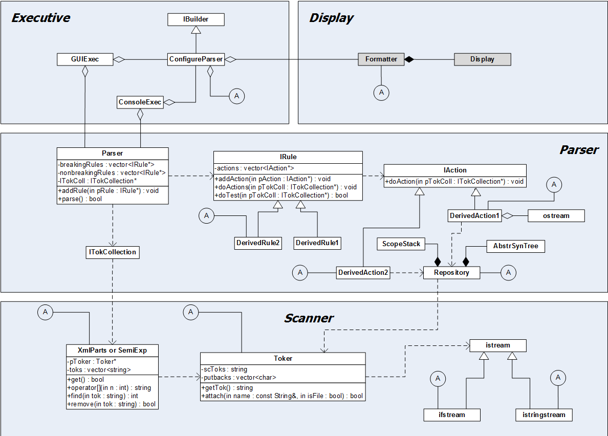
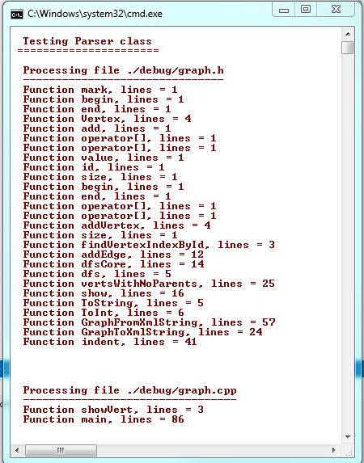

Parsing is the process of discovering and classifying the parts of some complex thing. Our interests are in parsing computer languages and particularly C, C++, Java, and C#.
In this context parsing is the process of some form of syntactic analysis, which may be based on a formal reduction using some representation like BNF,
or using some Ad-Hoc process.
There are a lot of reasons you may wish to parse source code beyond compiling it's text. For example:
Building code analysis tools
Searching for content in or ownership of code files
Evaluating code metrics
Compiling "little embedded languages"
Many code parsers have been written including: ANTLR, bison,
Lex, and Spirit. There is a long history of
successful use of some of these, so why would we consider writing yet another parser?
Using existing parsers for the fairly small tasks in which we are interested seems like killing flies with a sledge hammer - to much work and not enough reward.
Our goals are to build a facility that is quick to deploy, can be easily ported to different platforms, and for which the parsing model can be built incrementally
as we learn more about the work we are trying to accomplish.
Rule-Based Parser

Figure 1. - Parser Static Structure
A Rule-based Parser built in C++
Several years ago I built a protype to illustrate some design ideas for one of my graduate classes and to serve as help for a code analysis project that I wanted
to assign to them. The parser had to be simple enough and easy enough to use for students to understand it and incorporate successfully into their projects in a week or two and
still get the project assignment turned in on time.
That prototype has since been used in a couple of Doctoral research projects and by many of my graduate classes on a
variety of projects. We've found it to be an effective facility for learning language structure in the classroom and building research tools in the lab.
Design:
The Parser's logical structure is shown in the Parsing Facility diagram, here. It has a structure provided by the four blocks shown. At the bottom is a
scanner with the responsibility to consume a string or text file and return a stream of token collections.
Each token is a text word or group of punctuators.
Some tokens are constrained to consist of a single instance of specialized characters like braces, brackets, and such. Often the transition between characters
and white space are taken as token boundaries, but many special cases have been incorporated over years of use.
The tokenizer collects quoted strings and comments as
single tokens, independent of their contents. You can ask the tokenizer to return or to throw away comment tokens. Aside from comments and white space, the tokenizer
promises to return all the input stream's characters, in the order provided by the source. What it does is to segregate them into words called tokens. Thus it
removes all textual structure of the source while preserving it's compilable information.
For code analysis we collect tokens into grammatical sequences, called SemiExpressions, by terminating the collection on semicolons, curly braces, or newlines
if the line starts with "#". Each of these collections is usually sufficient to detect a single grammatical construct without including tokens from
the next grammatical entity. If we are parsing XML text then we use a package called XmlParts which has similar responsibilities to the SemiExpression package.
The Parser package uses the scanner to collect token sequences for analysis. It is essentially a container of rule detectors that implement an IRule interface.
Parser simply feeds the current token sequence to each rule in an internal rule container. When that is complete it requests another token sequence and repeats
until there is nothing more to collect.
The Parser doesn't need to know anything about how its token sequences are collected nor how a rule will handle the sequence. It is simply a traffic cop that
supplies the rules with what they need. Each rule has a collection of actions. When the rule is satisfied by a token collection it invokes its actions. It
is up to the action to decide what to do with the information contained in the token sequence when its rule fires. Each action is handed a reference to a
data repository to store and retrieve information to carry out its task. Note that the rules don't need to know what the actions do and the actions don't
even know the rules exist. They just do their thing when asked.
For each parsing application, the only things that need to change are the rules and actions, the ConfigureParser builder that assembles the analyzer's parts,
the Repository and Display. All the complex parts - tokenizer, SemiExpression, and Parser don't need to change at all. The rules and actions will probably be
modeled after already existing rules and actions, so reuse in a new application is fairly straight forward.
Demo Output

Figure 2. - Parser Output
Typical Output:
We show, in the command window, the results of running a simple rule set in the parser. This set has just a few rules that detect when a function is defined,
record the starting line number, and keep track of the current scope, using the ScopeStack shown in the class diagram near the Repository.
When the code sequence leaves the function's scope that line number is also recorded, so we can tell how many text lines are used by the function's
definition.
Our research group has used the Parser as the analysis engine for dependency analysis, code restructuring, and some code visualization. This Parser
design has allowed us to focus on asking and answering questions about code rather than the details of its syntactical analysis.
Source Code:
This parser implementation is written in C++ using Visual Studio 2012. It should port, with little difficulty, to Gnu gcc to run on Linux, for example.
You will find several projects in the VS solution. You may wish to start with the Parser project which runs out of a test stub main in the parser package.
One of my doctoral advisees, Dr. Murat Gungor (completed 2006), built the first rule set that analyzes the complete C++ scope tree. Murat used that
to investigate the structure of a large software system, looking for structural defects. This work
was published at SERP05. A current doctoral
advisee, Mehmet Kaya, has built a rule base, also for the C++ scope tree, that is used with the most recent version of the parser. He has been using
that to develop new ways of restructuring C++ source code to improve its structure and maintainability. Here is a Syracuse University
Technical Report describing that work.
Conclusions:
Of hundreds of design and implementation projects I've done over many years, this Parser is the one of which I am most pleased.
It does a fairly complex job with simple parts. It uses interfaces: ITokenCollection, IRule, IAction, and IBuilder to
decouple all the important parts so the design is very robust under change. It serves as a nice illustration of polymorphism and the four object-oriented class
relationships: inheritance, composition, aggregation, and using. And, it has been used successfully in several research activities and many classroom projects.